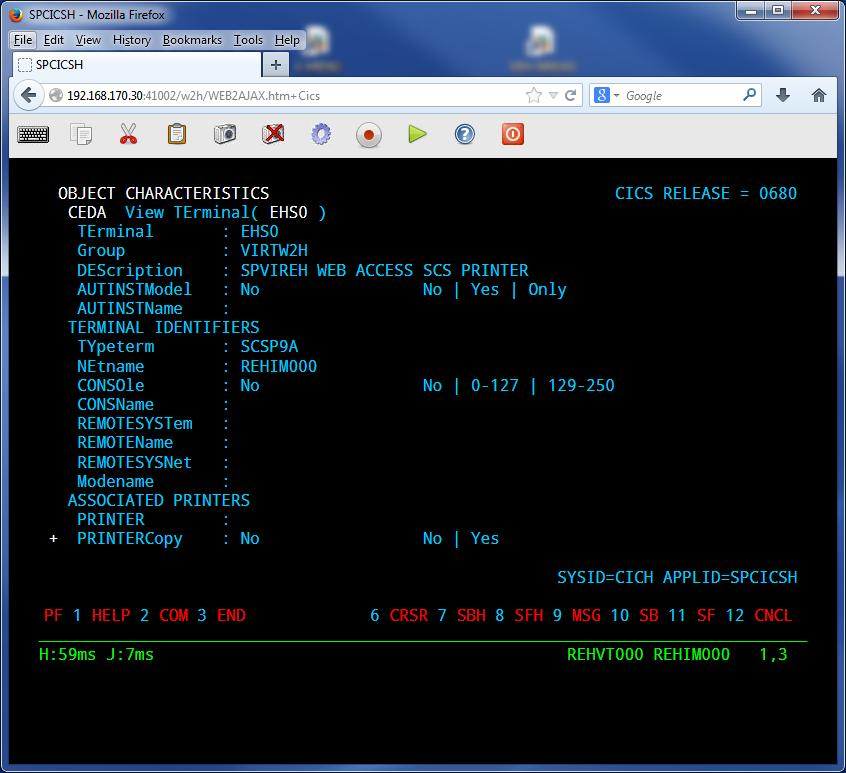
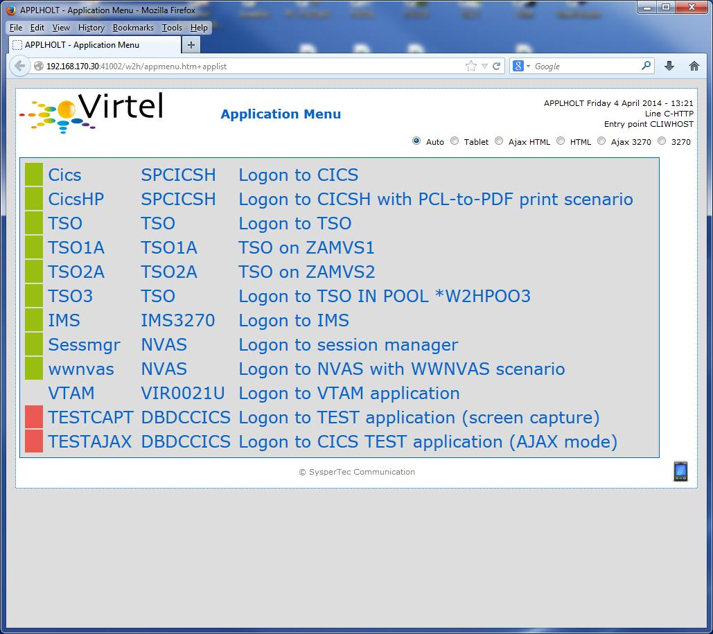
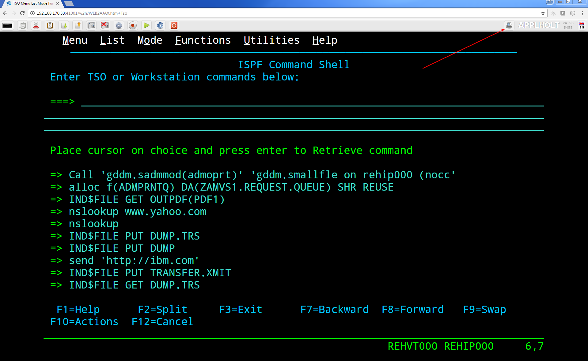
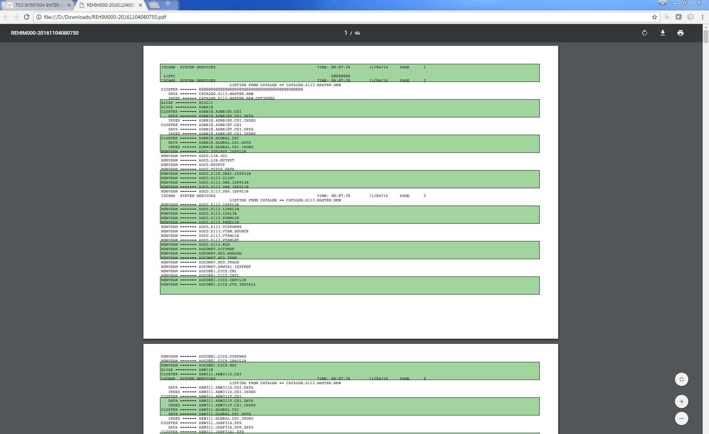
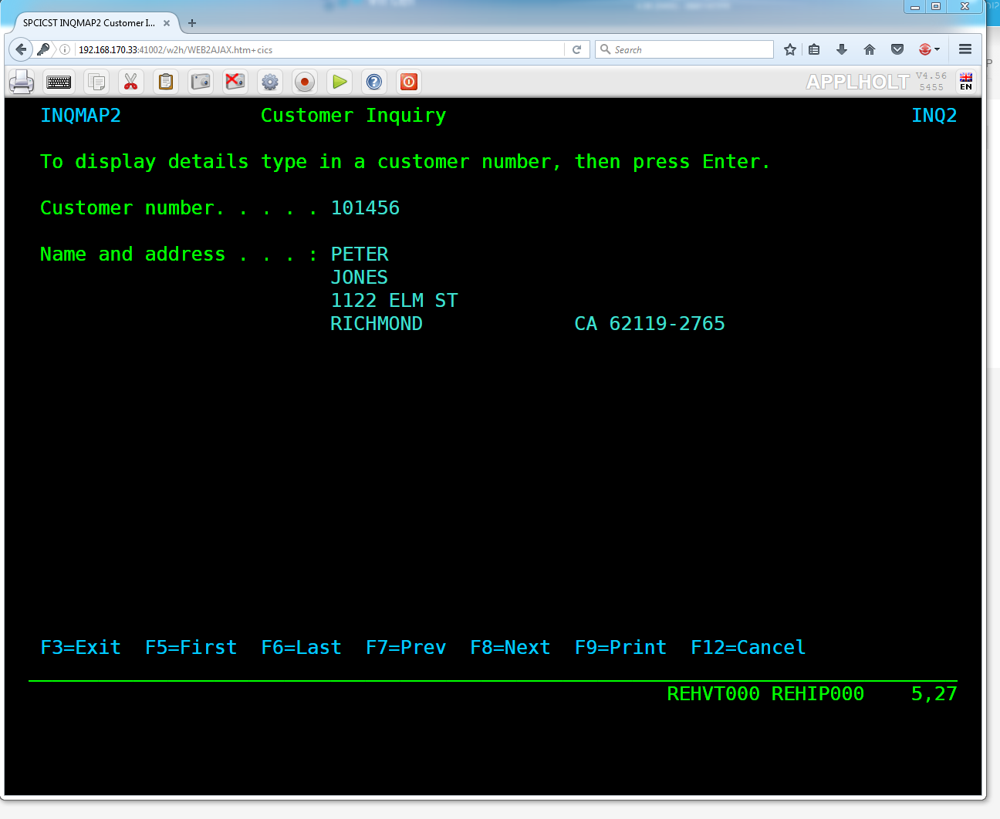

Mainframe printing with Virtel 4.56¶
This newsletters highlights some of the ways you can configure Virtel to utilize its printing capabilities. First and foremost let’s understand what Virtel can support with regard to printing. Just for clarification Virtel currently doesn’t support seamless or unattended printing. In other words a user cannot initiate a print transaction from CICS and expect the output to automatically pop out on the user’s default workstation printer. This is because Virtel is restricted to whatever the browser printer functionality provides. See the section “Seemless or unattended printing” at the end of this document for more details. However, having said that, there are several ways mainframe printing can be achieved with Virtel. This newsletter highlights the Virtel features that support mainframe printing and provides some guidance on how to implement them.
In the scenarios that follow user involvement is required. The supported Virtel LU printer types are LU Type 1(SNA SCS) and LU Type 0/3(3270 datastream).
Depending on the Virtel printer configuration one of several things can happen at the browser end:-
Printer Type LU0 or LU3 (Non SNA/3270 data streams)
Print data will be sent to the Virtel client and will appear in a new browser window. (Default action.)
Virtel Option: If AutoPrint is set on in the Virtel settings.
A Windows “Print” window will automatically open and the print data will be displayed. The user can then select to print the output data.
Printer Type LU1 (SNA/SCS)
Print data will be sent to Virtel as an attached file. This will drive a Windows “Save As or Open” window which will enable the user to open the file or save it. This file contains the RAW print data. This of course could include PCL data which could be further processed by external programs or printed by a printer that supports PCL datastreams. For example, the file could be converted to a PDF. There are many PCL to PDF conversion products on the open market. Virtel can also process the PCL data and convert it to a PDF either through a remote print server or through calling an internal service program called MAKEPDF.
Setting up Virtel to print from the mainframe.¶
LU3 Type printing (3270)¶
The following scenario demonstrates Virtel printing using the mainframe to a LU3 printer (NON-SCS). The user submits a batch job to print a file. The user has specified in the JCL that the JES2 output destination for this print job is a JES2 destination called EDSPRT. The user utilizes VTAM printer software to print to VTAM printers. In this case we are using VJRS, an Syspertec internal JES writer tool, but it could equally be IBM’s JES328X, INFOPRNT or any comparable software such as Natural’s COMPLETE NatSPool. Whatever software is used it will have the capability of associating a JES2 DESTID with a remote 3270 printer and extracting the output from the JES spool and sending it to a LU printer.
 Fig. 1 - Printing LU3
Fig. 1 - Printing LU3
Virtel pretends to be that remote 3270 printer through its relay LU associated with a user’s terminal session. In our case the printer name is REHIP000. This is set up in the terminal section of Virtel which can be accessed using F2 from the Virtel Configuration Menu. The following screen shot shows a terminal definition screen in Virtel. I’m using a prefix of REH in my example. The shipped defaults are prefixed RHT.
Note
Terminal REHIP000 is a second relay associated with terminal relay REHVT000, both of which are located within the *W2HPOOL. REHVIP000 is designated as type “P” – LU3 3270 printer.
In the shipped sample definitions the LU Type 1 (RHTIM000) is associated with the relay terminal definition RHTVT000. To use LU T3 (3270 datastream) the RHTVT000 definition must be updated to associate the printer terminal RHTIP000 with RHTVT000.
 Fig. 2 - Example of Virtel terminal definitions.
Fig. 2 - Example of Virtel terminal definitions.
The virtual relay definitions that Virtel uses to support VTAM terminals and applications are defined in the VIRTAPPL VTAM definition. This can be found in the shipped VIRTEL.CNTL library. Here is an example:-
VIRTAPPL VBUILD TYPE=APPL
* ------------------------------------------------------------------ *
* Product : VIRTEL *
* Description : Main ACB for VIRTEL application *
* ------------------------------------------------------------------ *
VIRTEL APPL EAS=160,AUTH=(ACQ,BLOCK,PASS,SPO),ACBNAME=VIRTEL
* ------------------------------------------------------------------ *
* RHTVTxxx : VTAM application relays for VIRTEL Web Access *
* ------------------------------------------------------------------ *
RHTVT??? APPL AUTH=(ACQ,PASS),MODETAB=ISTINCLM,DLOGMOD=SNX32702,EAS=1
* ------------------------------------------------------------------ *
* RHTIMxxx : Printer relays for VIRTEL Web Access terminals *
* ------------------------------------------------------------------ *
RHTIM??? APPL AUTH=(ACQ,PASS),MODETAB=ISTINCLM,DLOGMOD=SCS,EAS=1
RHTIP??? APPL AUTH=(ACQ,PASS),MODETAB=ISTINCLM,DLOGMOD=DSILGMOD,EAS=1
Warning
Do not modify the ??? to a numeric number. These are VTAM model APPL definitions and the ??? is a valid string in this context.
There is no need to modify this definition. It should be copied to the VTAMLST library and activated with the V NET,ACT,ID= VTAM command.
When Virtel detects that is has printer output, it will collect it from the printer relay LU and send it to the associated terminal session. When the session receives the output it will be displayed in a new browser window. Here is a screen shot of my terminal session before sending any output.
 Fig. 3 - Example of Virtel Browser screen before print data has been sent.
Fig. 3 - Example of Virtel Browser screen before print data has been sent.
Note
In the bottom corner you can see the two virtual SNA LUs that Virtel is using to represent this browser session to VTAM. Theses are the Virtel Relays. The first name, REHVT000, is the 3270 terminal LU and the second, REHIP000, is the associated SNA printer attached to REHVT000.
The Virtel VJRS utility program is used to emulate a VTAM printer interface and is run as a started task. When it detects output destined for one of its defined printers it will grab the spooled output from JES2 and drive the virtual printer REHIP000.
The VJRS definition looks like:-
* ----------------------------------------------------------------------------*
* - PRINTER CONTROL STATEMETS FOR VJRS UTILITY. -*
* - -*
* - COL 1 JES DESTID -*
* - COL 10 VIRTEL LU RELAY PRINTER DEFAULT LOGMODE -*
* - COL 19 PRINTER TYPE -*
* - S = SCS PRINTER. LU TYPE 1 SNA SCS -*
* - N = 3270 PRINTER. LU TYPE 3 NON-SNA DSILGMOD -*
* ----------------------------------------------------------------------------*
* * * *
EDSPRT1 REHIM000 S
EDSPRT REHIP000 N
The Virtel relay LU printer name REHIP000 has been associated with JES2 destination EDSPRT. The following JCL is used to print some data to the JES2 destination EDSPRT.
//SPTHOLTP JOB 'VJRSTEST',CLASS=A,MSGCLASS=Z,NOTIFY=SPTHOLT
//STEP1 EXEC PGM=IEBGENER
//SYSPRINT DD DUMMY
//SYSUT2 DD SYSOUT=A,DEST=EDSPRT
//SYSUT1 DD DSN=SPTHOLT.TEST.PRINTS(TEST),DISP=SHR
//SYSIN DD DUMMY
/*
Note
The JRP utility program in the CBT archive - File 755 can be used in place of the Virtel VJRS utility. This is freely available under the terms and conditions of CBT.
Once Virtel detects output on its relay LU it will send it to the browser. This can be seen by the fact that a small printer icon will appear in the task bar. See the screen shot below:-
Fig. 4 - Print data received by browser. Printer ICON displayed in Task Bar.
Pressing the ICON will open a second browser window which will reveal the print data. See the following screen shot:-
 Fig. 5 - Print data displayed in second browser window.
Fig. 5 - Print data displayed in second browser window.
From this window the print data can be printed using the normal windows menu dialogs. Virtel does have an Auto-print option in the Virtel settings panel. This will automatically open up the Windows Print dialog so that you can just click “print” to print the data. Once you have printed your output you can close the Virtel Print window and continue with your terminal session.
LU1 Type printing SCS¶
In this scenario we demonstrate printing from CICS and converting the output to a PDF. The Virtel setup for this requires the use of a third party product to convert the PCL data stream to a PDF. A PageTech server environment is set up to perform this conversion.
 Fig. 6 - LU1 (SCS) printing flow with external print server
Fig. 6 - LU1 (SCS) printing flow with external print server
In this scenario we have defined a SCS printer (LU1) in CICS and associated it with the netname REHIM000. This will be the relay LU name that Virtel will use to represent the printer. Here is a view of the CICS definition as displayed by the CEDA transaction:-
 Fig 7 - CEDA of LU T1 printer definition used by Virtel
Note that in the bottom right of the screen the two relay LU names associated with this browser session are displayed. The REHVT000 is the terminal and the REHIM00 is the attached LU1 printer. A CICS transaction will be invoked by the user which will acquire the printer and write a PCL data stream to terminal EHS0. This PCL Data stream will be sent to the LU REHIM00. Virtel will detect the output and using the scenario SCENFPDF will send the print data stream to the PageTech server environment where the data will be converted to a PDF file. When the PDF is returned back to the Virtel server, from the PageTech server, it will be sent as a mulit-attachment PDF MIME to the browser. The user will then be able to save or open the PDF file.
The Virtel transaction that performs this process is defined with the following fields.
 Fig. 8 - Virtel Transaction Detail for CICS transaction
Fig. 8 - Virtel Transaction Detail for CICS transaction
The transaction’s external name is CICSHP and this name will be displayed in the Virtel application menu. The TIOA at logon field is a formatted character string that will simulate logging onto CICS and invoking the CICS transaction. The input scenario, SCENPPDF, will be triggered when Virtel detects output from the CICS transaction. Virtel’s scenario language is used to perform Virtel’s modernization and integration features. See appendix for an example of the PDF conversion scenario.
When the input scenario detects the print data stream it will send it to the PageTech server for conversion to a PDF file. The PDF returned by the PageTech servers will be sent to the browsers as a file attachment. This attachment can then be saved or printed.
The CICS transaction is initiated from the Virtel Application menu by selecting the CICSHP menu option. This will automatically signon to CICS, acquire the printer and return a PCL stream to Virtel. The PCL data stream will be input to the external server.
 Fig. 9 - The Virtel Application Menu Screen
After conversion to PDF virtel will return the PDF as an attachment to the user’s browser. A window will open to enable the user to save or open the PDF file.
 Fig. 10 - Processing a PDF File
Fig. 10 - Processing a PDF File
TSO Printing¶
A lot of customers use GDDM’s ADMOPUT program to print from TSO. In this section we see how to define the GDDM ADMOPUT interface to Virtel. Both LU1 and LU3 are supported by Virtel. ADMOUT runs normally runs as a started task. It services “queues” that have been set up to control the printing of alphanumeric files. Details of setting up ADMOPUT can be found in the IBM’s GDDM Administration Guide – SC33-0871-02.
The following is an example of printing with GDDM.
Create the printer definitions in the ADMPRINT job and run the job to build the request queues. In this example REHIP000 is a LU3 3270 printer and REHIM000 is a LU1 SCS printer. These should exist as VTAM APPLS and should be installed as part of the Virtel installation:-
REHIM??? APPL AUTH=(ACQ,PASS),MODETAB=ISTINCLM,DLOGMOD=SCS,EAS=1
REHIP??? APPL AUTH=(ACQ,PASS),MODETAB=ISTINCLM,DLOGMOD=DSILGMOD,EAS=1
The printer definitions for ADMPRINT should look like this:-
* **********************************************************************
* *
* CONTROL STATEMENTS *
* *
* *
* TIMER DEFINES THE POLL INTERVAL IN TENS OF SECS
* EXTRA DEFINES THE NUMBER OF PRINTERS THAT CAN BE DYNAMICALLY ADDED
* *
HEADER TIMER=4,EXTRA=30
* *
* ADD MORE PRINTER STATEMENTS HERE AS REQUIRED *
PRINTER REHIP000,SIZE=1920 PRINTER NAME,BUFFER SIZE
PRINTER REHIM000,SIZE=1920 PRINTER NAME,BUFFER SIZE
PRINTER R1AIM000,SIZE=1920 PRINTER NAME,BUFFER SIZE
PRINTER R2AIM000,SIZE=1920 PRINTER NAME,BUFFER SIZE
*
* PQECNT DEFINES THE MAXIMUM NUMBER OF PRINT REQUESTS WHICH CAN BE *
* ACTIVE AT ONE TIME. INCREASE THE NUMBER IF REQUIRED *
* *
TRAILER PQECNT=186 ACTIVE PRINT REQUEST LIMIT
END
Activate the GDDM ADMOPUT VTAM APPL:-
GDDMAPPL VBUILD TYPE=APPL
* ------------------------------------------------------------------ *
* GDDM : ADMOPUT GDDM ACB *
* ------------------------------------------------------------------ *
GDDMPRT1 APPL AUTH=(ACQ,PASS),MODETAB=ISTINCLM,EAS=1
Start the GDDM ADMOPUT task. The VTAM APPL must be active. The following JCL is an example:-
//SPTHOLTG JOB CLASS=A,MSGCLASS=X,NOTIFY=&SYSUID,REGION=64M
//GDDMPRT1 EXEC PGM=ADMOPUT,DYNAMNBR=N,REGION=0K,
// PARM='NAME=GDDM,MAXPRTRS=0010'
//STEPLIB DD DSN=GDDM.SADMMOD,DISP=SHR
//ADMSYMBL DD DSN=GDDM.SADMSYM,DISP=SHR
//ADMGGMAP DD DSN=GDDM.SADMMAP,DISP=SHR
//ADMPRNTQ DD DSN=SPTHOLT.ZAMVS1.REQUEST.QUEUE,DISP=SHR
//*ADMDEFS DD DSN=YOUR.ADMDEFS,DISP=SHR
//SYSABEND DD SYSOUT=*
When the ADMOPUT successfully starts it will write a message to the console log:-
@19 ADM2000 I ADMOPUT(GDDM). TO TERMINATE, REPLY 'STOP', 'STOPQ', OR 'STOPS'
Now we can start Virtel making sure that we have a second relay printer associated with a 3270 session. In this case we start a TSO session. We can see that the TSO 3270 screen REHVT000 is associated with printer REHIP000.
 Fig. 11 - 3270 LU with relay printer REHIP000
Fig. 11 - 3270 LU with relay printer REHIP000
Next, we allocate the queue file to our TSO session with an allocate command:-
alloc f(ADMPRNTQ) DA(ZAMVS1.REQUEST.QUEUE) SHR REUSE
This is the same file that is allocated in the ADMOPUT task. Next we place a print request into the print queue by call ADMOPRT from within our TSO session:-
Call 'gddm.sadmmod(admoprt)' 'gddm.smallfle on rehip000 (nocc'
This will place a request to print the file myhlq.gddm.smallfle to the printer defined as REHIP000. The ‘nocc’ option tells GDDM not to insert any carriage control characters. If we look at the request queue using the GDDM print queue manager we should be able to see the print request.
 Fig. 12 - GDDM Print Queue
Fig. 12 - GDDM Print Queue
When GDDM polls the GDDM request queue it will see the request for REHIP000. It will convert the output, set up a session with REHIP000 and send the output to what it believes is a LU3 printer. Virtel will receive the output from GDDM and convert it to HTML. A small printer ICON will appear on the Virtel Task Bar when the printed output is ready to be processed. See the red line in the screen shot below.
 Fig. 13 - Print request ready for processing
Prerssing the printer ICON will process the output. For LU Type3 a second browser window will be open and the output displayed. For LU Type1 the file will be download to the users PC for further processing. In our example we are using LU Type3 sp after clicking the printer ICON a second browser window is opened displaying the contents of the file. From here the file can be printed or saved for furrther processing.
 Fig. 14 - Second Browser window containing print. LU3 behaviour
Fig. 14 - Second Browser window containing print. LU3 behaviour
Once the print output has been processed the browser window should be closed and ENTER should be pressed on the TSO session to clear the printer ICON.
Printing and MAKEPDF¶
MAKEPDF is a program that creates PDFs using standard output files as its input data. It is included in the delivered Virtel product and runs as a external service of the Virtel VIRSV service. MAKEPDF requires conrol statements as well as the raw data to construct the PDF. The control statements provide the layout, image and control information. Three separate files are involved – the DOCOPT, INPUT and LAYOUT files. These files are created by the user and the uploaded to the SAMPTRSF W2H directory. Samples are provided below. These work with the SCENFLND scenarion. See Appendix B:-
scenvjrs-docopt_l.txt
<!--VIRTEL start="{{{" end="}}}"-->
{{{CREATE-VARIABLE-IF(APPLICATION-IS-CONNECTED) "$PDFAPP$"}}}
{{{PDF-NEW-DOCOPT "1"}}}
DOCINFO TITLE="{{{NAME-OF (PRINT-RELAY)}}}-{{{NAME-OF (DATE-TIME)}}}"
AUTHOR="{{{NAME-OF (USER)}}}" SUBJECT="" KEYWORDS=""
CREATOR="{{{CURRENT-VALUE-OF "$PDFAPP$"}}}"
PRODUCER="VIRTEL ({{{NAME-OF(VIRTEL)}}})"
PAGE SIZE=A4 LANDSCAPE
DefineOverlay GreenBar Top=0.5 Bottom=0.5 Left=0.5 Right=0.5
BarHeight=0.5 BarColor=LiteGreen NudgeRight=-2 NudgeDown=1
DefineFont Font1 Native=Courier
DefineFont Font2 Native=Helvetica
DefineDefaultFont Native=Courier
DefaultFontSize 8 9
SetVar GlobalVar1 = "VJRS Test Print"
scenvjrs-input_l.txt
<!--VIRTEL start="{{{" end="}}}" -->
{{{PDF-NEW-INPUT}}}{{{PDF-USE-DOCOPT "1"}}}{{{PDF-USE-LAYOUT "1"}}}
{{{PDF-LINES-PER-PAGE (50)}}}
{{{FOR-EACH-VALUE-IN "$PRINT$"}}}{{{CURRENT-VALUE-OF "$PRINT$"}}}
{{{END-FOR "$PRINT$"}}}
scenvjrs-layout_l.txt
<!--VIRTEL start="{{{" end="}}}" -->
{{{PDF-NEW-LAYOUT "1"}}}
At (0.5" 8.0")
ApplyOverlay GreenBar
TextBegin
Font Font1 Size(8 9) fill(black)
PageContents Lines(all)
FontEnd
TextEnd
; Place some text outside box
TextBegin
Font Font2 size(10 12) fill(teal)
Map "Document=" at(0.5" 8.29")
Map GlobVar1
FontEnd
TextEnd
;
An input scenario is required to access the control files, the raw print data and to interface with the external service that calls MAKEPDF. A PDF file is rerturned to the user once the processing of the raw data is complete. A “printer” ICON will appear in the toolbar indicating that the PDF is ready to be printed. The external service program that creates the PDF is called VIRSVPDF and this is linkedited with the MAKEPDF program. See the Virtel User Guide for further information on how to setup and run MAKEPDF.
The following is an example of a PDF created by MAKEPDF using the output from a utility listing. The output was sent to JES2 and then extracted by the VJRS program and sent to Virtel an SCS data stream.
 Fig. 15 - Multi-Page PDF listing using MAKEPDF
Virtel delivers the VIRSVPDF program as an example of a MAKEPDF external service. This program is designed only to produce 1 page per service call. For producing PDF’s with multiple pages please contact the Syspertec support centre for further advice. The scenario associated with this landscape printing is called SCENFLND. See Appendix B.
Seamless or unattended printing¶
The scenarios in this newsletter have demonstrated some of the print options that Virtel currently supports. As you can see user involvement is required in any print scenario that has been initiated from the mainframe. Because of restriction within JavaScript and the browser support seamless or unattended printing is not available by default. This is more of a security feature than anything. Virtel is a “thin” client solution, a web application that runs within the browser and is “restricted” to whatever services or facilities the browser provides. Unlike other terminal emulators, like IBM’s PCOMM, which is considered a “fat client”, Virtel doesn’t have accesses to the same rich capabilities that this Java application can provide. For this reason Virtel customer are restricted to some extent to whatever printing facilities the Javascript/HTML and browsers can support. Of course, on the positive side, a thin client doesn’t have all the Java release complications that people have experienced in the past. There is no applet download, security setup or ongoing support issues which have plagued users since the birth of the Java Applet. This was one of the reasons why people moved away from “fat clients” towards a thin client solution which required no changes to their PC. Despite these limitations Virtel does have considerable printing within its scenario language.
Having said that Virtel can be configured to support seamless printing but at a browser level. This configuration is outside the support currently offered by SysperTec but we highlight what options are available. Users who undertake implementing these options do so in the knowledge that these are not supported options.
Firefox: Seamless browser printing using the JavaScript print command.¶
In this example we set up a Virtel Transaction so that the browser window can be printed directly to the default printer through a “Printer” icon. The printer “ICON” will be added to the Virtel task bar.
Setting up Firefox
Enter “about:config” in the Firefox address bar. This will bring up the Firefox preferences. Right click on any preference and select New Boolean. Add the preference print.always.print.silent, press OK and then set the option to “true”. Close and restart the Firefox browser. From now on any JavaScript print(); command will print directly to the printer using the current configured print settings.
Adding the printer ICON to the task bar.
We use a custom.js file to add a printer ICON to the task bar. This customized option is applied to a CICS transaction CLI-10 in our list of transactions. Using the ADMIN HTML panel will update the transaction Option field with an option definition called CICSPRNT
 Fig. 16 - Setting the transaction option
Fig. 16 - Setting the transaction option
We press the “Spanner” icon on the right to create and validate the relevant files.
 Fig. 17 - Creating and Validating the Option files
Fig. 17 - Creating and Validating the Option files
The validation process creates the javascript file option.CICSPRNT.js which is uploaded to Virtel. Within this file we identify the two customization files that will be used for this CICS transaction. In this case /option/custCSS.CICSPRNT.js and /option/custJS.CUSTPRNT.js. For this example we are only interested on the custJS.CUSTPRNT.js file. We must also ensure that we have a direct/path transaction for the /option/ directory pointing to the Virtel CLI-DIR. We add another transaction to support the /option/ directory path location being CLI-DIR. This is the directory where we will load up our custJS.CUSTPRNT.js file. Be sure to save your changes to the transaction before exiting. You must save the updates then return to the transaction list where you will be asked to confirm the update. Do not use the browser back key – this will lose the update. Go back via the option menu hierarchy.
 Fig. 18 - Creation a transaction for the option directory
Fig. 18 - Creation a transaction for the option directory
Next we create our customized JavaScript file which will added the print ICON to the task bar and associate a function which will be executed when the user presses the print ICON. Our custJS.CICSPRNT.js looks like this. Details about toolbar customization can be found in the Virtel User Guide:-
//CLI-DIR
function after_standardInit() {
addtoolbarbutton(000,"print.ico","Print Screen",do_print);
}
function do_print() {
window.print();
}
We upload custJS.CICSPRNT.js and a print.ICO image to the CLI directory using Virtel’s Drag and Drop facility found in the Virtel Admin. Portal. When we load up the CICS transaction we can now see the printer ICON in the tool bar – the first ICON on the toolbar. Pressing it will print the browser screen without the standard Printer Pop-Up appearing. The output will appear on the users default printer.
 Fig. 19 - Printer ICON in the tool bar
Chrome: Seamless browser printing using the kiosk options.¶
The same behavior can be displayed in Chrome if we start Chrome with the –kiosk-printing option:-
“C:\\Program Files (x86)\\Google\\Chrome\\Application\\chrome.exe" --kiosk-printing
When the press the Print ICON the browser image appears on the default printer. There is no intervening “setup” window. We can also use the –kiosk option to hide the URL bar and specify the target URL in the command line:-
C:\\nodeJS>"C:\\Program Files(x86)\\Google\\Chrome\\Application\\chrome.exe" --kiosk-printing –kiosk http://192.168.170.33:41002/w2h/WEB2AJAX.htm+Cics
 Fig. 20 - Full screen kiosk display with Chrome
Fig. 20 - Full screen kiosk display with Chrome
The browser window can be closed with ALT-F4.
Appendices¶
Appendix A¶
SCENPPDF SCREENS APPL=SCENPPDF
*
* SCENARIO TO CONVERT PCL TO PDF AND SEND TO PRINT SERVER
*
SCENARIO INPUT
*
* Test if the browser request specified pf=SCENARIO-PRINT
*
COPY$ INPUT-TO-VARIABLE,FIELD='PF',VAR='PF',TYPE=REPLACE
IF$ NOT-FOUND,THEN=NOPARAMS
CASE$ 'PF', *
(EQ,'SCENARIO-PRINT',PRINT), *
ELSE=NOPARAMS 4
*
* process the request for printing
*
PRINT EQU *
*
* Get the VIRTEL APPLID, terminal name, and printer name
*
COPY$ SYSTEM-TO-VARIABLE,VAR='APPLID', *
FIELD=(NAME-OF,VIRTEL)
COPY$ SYSTEM-TO-VARIABLE,VAR='TERMINAL', *
FIELD=(NAME-OF,PSEUDO-TERMINAL)
COPY$ SYSTEM-TO-VARIABLE,VAR='PRINTER', *
FIELD=(NAME-OF,PRINT-RELAY)
*
* Use the timestamp to generate a document name
*
POP$ ALL-VALUES-OF,VAR='TIMESTAMP'
COPY$ SYSTEM-TO-VARIABLE,VAR='TIMESTAMP', *
FIELD=(NAME-OF,DATE-TIME)
COPY$ LIST-TO-VARIABLE, For VIRTEL 4.47+ *
VAR='DOCNAME',TYPE=REPLACE, *
LIST=(VARIABLE,'PRINTER',STRING,'-', *
VARIABLE,'TIMESTAMP')
*
* The PCL input file has been written to $PRINT$ by VIR0915I
*
IF$ EXISTS-VARIABLE,'$PRINT$',ELSE=NOPRINTD
*
* Set up the outbound HTTP call to the PCL-to-PDF converter
* See job PCL2PDF for definition of IP address of PCL2PDF server
*
OPTION$ FOR-HTTP, *
(METHOD,'POST'), *
(SITE,'pcl2pdf.yourcompany.com'), *
(TO,'/pdfconv.php'), *
(HEADER,'Content-Type: text/pcl'), *
(FILE-OUT,'$PRINT$'), *
(FILE-IN,'PDFDATA'), *
(RET-CODE,'RETCODE'), *
TOVAR='HTTPARM'
*
* Issue a progress message to the console
*
ERROR$ 0, *
'*APPLID',' ','*TERMINAL',' ','*PRINTER',' ', *
'SCENPPDF SENDING DOCUMENT ','*DOCNAME', *
' TO PCL2PDF SERVER'
*
* Call the PCL-to-PDF converter
*
POP$ ALL-VALUES-OF,VAR='PDFDATA'
POP$ ALL-VALUES-OF,VAR='RETCODE'
SEND$ TO-LINE, *
LINE='PCL2PDF', *
PARMS='HTTPARM', *
ERROR=HTTPFAIL
*
* Check for successful HTTP response
*
IF$ NOT-EXISTS-VARIABLE,'RETCODE',THEN=HTTPINV
CASE$ 'RETCODE', *
(BEGIN,'200',SENDPDF), *
ELSE=HTTPERR
SENDPDF EQU *
*
* Send PDF file to browser
*
COPY$ LIST-TO-VARIABLE, For VIRTEL 4.47+ *
VAR='PDFNAME',TYPE=REPLACE, *
LIST=(VARIABLE,'DOCNAME',STRING,'.pdf')
SEND$ AS-FILE,VAR='PDFDATA', *
TYPE='application/pdf',NAME='*PDFNAME'
*
* Issue a progress message to the console
*
ERROR$ 0, *
'*APPLID',' ','*TERMINAL',' ','*PRINTER',' ', *
'SCENPPDF DELIVERED DOCUMENT ','*DOCNAME', *
' TO TERMINAL'
*
NOPARAMS EQU *
SCENARIO END
*
* Error exits
*
NOPRINTD EQU *
COPY$ LIST-TO-VARIABLE, For VIRTEL 4.47+ *
VAR='ERRMSG',TYPE=REPLACE, *
LIST=(STRING,'NOTHING TO PRINT FOR ', *
VARIABLE,'PRINTER')
GOTO$ CREAHTML
*
HTTPINV EQU *
COPY$ VALUE-TO-VARIABLE, *
VAR='ERRMSG',TYPE=REPLACE, *
VALUE='INVALID RESPONSE FROM PCL2PDF SERVER'
GOTO$ CREAHTML
*
HTTPERR EQU *
COPY$ LIST-TO-VARIABLE, For VIRTEL 4.47+ *
VAR='ERRMSG',TYPE=REPLACE, *
LIST=(STRING,'PCL2PDF SERVER RETURNED ', *
STRING,'HTTP CODE=',VARIABLE,'RETCODE')
COPY$ LIST-TO-VARIABLE, For VIRTEL 4.47+ *
VAR='RESPONSE',TYPE=REPLACE, *
LIST=(VARIABLE,'PDFDATA')
GOTO$ SENDHTML
*
HTTPFAIL EQU *
COPY$ VALUE-TO-VARIABLE, *
VAR='ERRMSG',TYPE=REPLACE, *
VALUE='OUTBOUND CALL TO PCL2PDF SERVER FAILED'
CREAHTML EQU *
COPY$ LIST-TO-VARIABLE, For VIRTEL 4.47+ *
VAR='RESPONSE',TYPE=REPLACE, *
LIST=(STRING,'<html><head><title>SCENPPDF error</title><*
/head><body>',VARIABLE,'ERRMSG', *
STRING,'<br>See messages in JESMSGLG for ', *
VARIABLE,'APPLID', *
STRING,'</body></html>')
CONVERT$ EBCDIC-TO-ASCII,VAR='RESPONSE'
SENDHTML EQU *
SENDHTML EQU *
ERROR$ 0, *
'*APPLID',' ','*TERMINAL',' ','*PRINTER',' ', *
'SCENPPDF ERROR: ', *
'*ERRMSG'
COPY$ OUTPUT-FILE-TO-VARIABLE, *
FILE='PDFFAILURE.htm',VAR='OUTPUTTXT'
SEND$ AS-FILE,VAR='RESPONSE', *
TYPE='text/HTML',NAME='FAILURE.htm'
SCENARIO END
*
SCRNEND
END
Appendix B¶
SCENFLND SCREENS APPL=SCENFLND
*
* SCENARIO TO CONVERT £PRINT£ FROM TO PDF. LANDSCAPE
*
SCENARIO INPUT
* Test if the browser request specified pf=SCENARIO-PRINT
COPY£ INPUT-TO-VARIABLE,FIELD='PF',VAR='PF',TYPE=REPLACE
IF£ NOT-FOUND,THEN=NOPARAMS
CASE£ 'PF',(NE,'SCENARIO-PRINT',NOPARAMS)
* An ASCII print file has been written to £PRINT£ by VIR0915I
IF£ EXISTS-VARIABLE,'£PRINT£',ELSE=NOPRINTD
* Convert £PRINT£ file from ASCII to EBCDIC for MAKEPDF
CONVERT£ ASCII-TO-EBCDIC,VAR='£PRINT£'
* Create INPUT file for MAKEPDF
COPY£ OUTPUT-FILE-TO-VARIABLE,TYPE=LINEBUFFER, *
FILE='SCENVJRS-INPUT_L.TXT',VAR='INPUT'
* Create DOCOPT file for MAKEPDF
COPY£ OUTPUT-FILE-TO-VARIABLE,TYPE=LINEBUFFER, *
FILE='SCENVJRS-DOCOPT_L.TXT',VAR='DOCOPT'
* Create LAYOUT file for MAKEPDF
COPY£ OUTPUT-FILE-TO-VARIABLE,TYPE=LINEBUFFER, *
FILE='SCENVJRS-LAYOUT_L.TXT',VAR='LAYOUT'
* Initialize variables with defaults
POP£ ALL-VALUES-OF,VAR='OUTPDF'
POP£ ALL-VALUES-OF,VAR='ERRMSG'
* Call service program VJRS0200 which calls MAKEPDF
VIRSV£ CALL-REUSE,('SERVPDF','VJRS0200'), *
(IN-VARIABLE,'INPUT',* 3), *
(IN-VARIABLE,'DOCOPT',* 1), *
(IN-VARIABLE,'LAYOUT',* 1), *
(OUT-VARIABLE,'OUTPDF',500K), *
(OUT-VARIABLE,'ERRMSG',160), *
(NUMBER,'2'), MAKEPDF TRACE LEVEL *
TRACE=(NO-APPLICATION-TRACE, VIRSV TRACE LEVEL *
NO-CALLS-TRACE,NO-DISPATCH-TRACE,NO-MEMORY-TRACE), *
ERROR=REJECT,TASKS=1
* Send PDF file to browser
COPY£ SYSTEM-TO-VARIABLE,VAR='PRINTER', *
FIELD=(NAME-OF,PRINT-RELAY)
COPY£ SYSTEM-TO-VARIABLE,VAR='TIMESTAMP', *
FIELD=(NAME-OF,DATE-TIME)
COPY£ VALUE-TO-VARIABLE, For VIRTEL 4.46 *
VAR='PDFNAME',TYPE=REPLACE, *
VALUE='my.pdf'
COPY£ LIST-TO-VARIABLE, For VIRTEL 4.47+ *
VAR='PDFNAME',TYPE=REPLACE, *
LIST=(VARIABLE,'PRINTER',STRING,'-', *
VARIABLE,'TIMESTAMP',STRING,'.pdf')
SEND£ AS-FILE,VAR='OUTPDF', *
TYPE='application/pdf',NAME='* PDFNAME'
* Issue a progress message to the console
ERROR£ 0, *
'* APPLID',' ','* TERMINAL',' ','* PRINTER',' ', *
'SCENFLND DELIVERED DOCUMENT ','* PDFNAME', *
' TO TERMINAL'
*
NOPARAMS EQU *
SCENARIO END
*
* Error exits
*
NOPRINTD EQU *
COPY£ LIST-TO-VARIABLE, For VIRTEL 4.47+ *
VAR='ERRMSG',TYPE=REPLACE, *
LIST=(STRING,'NOTHING TO PRINT FOR ', *
VARIABLE,'PRINTER')
GOTO£ CREAHTML
*
REJECT EQU *
CREAHTML EQU *
COPY£ LIST-TO-VARIABLE, For VIRTEL 4.47+ *
VAR='RESPONSE',TYPE=REPLACE, *
LIST=(STRING,'<html><head><title>SCENFLND error</title>
</head><body>',
VARIABLE,'ERRMSG', *
STRING,'</body></html>')
CONVERT£ EBCDIC-TO-ASCII,VAR='RESPONSE'
SENDHTML EQU *
ERROR£ 0, *
'* APPLID',' ','* TERMINAL',' ','* PRINTER',' ', *
'SCENFLND ERROR: ', *
'* ERRMSG'
SEND£ AS-FILE,VAR='RESPONSE', *
TYPE='text/html',NAME='FAILURE.htm'
SCENARIO END
*
SCRNEND
END